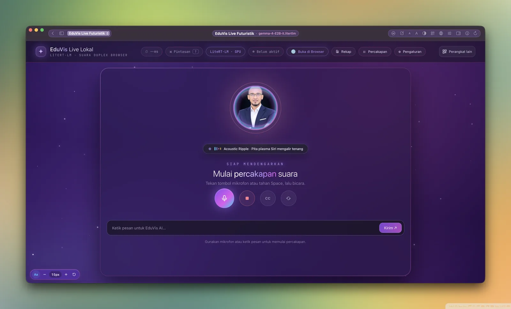

100% Privat & Offline
Model Gemma 4 berjalan langsung di GPU/RAM perangkat Anda. Mendukung cache OPFS browser maupun file .litertlm lokal.
EduVis AI Gallery menggabungkan 15 ruang kerja AI interaktif, percakapan suara dua arah EduVis Live & Futuristik dengan TTS Neural lokal, akses LAN HTTPS + QR lintas perangkat, serta aplikasi EduVis Native AI 100% SwiftUI Liquid Glass untuk macOS — tanpa biaya API dan tanpa cloud.
Jalan murni di browser melalui WebGPU/WASM + OPFS, atau melalui aplikasi desktop macOS & server LAN HTTPS bertenaga LiteRT-LM GPU Metal.
Model Gemma 4 berjalan langsung di GPU/RAM perangkat Anda. Mendukung cache OPFS browser maupun file .litertlm lokal.
Pilih EduVis Native AI (100% SwiftUI Liquid Glass, ⌘K Spotlight, 13 Studio) atau EduVis AI Gallery (Launcher Space Lens).
Percakapan dua arah dengan Auto Silence VAD, Siri Live Sphere, server TTS VITS/Piper/RVC on-demand, dan fallback Realtime Native.
Bagikan AI lokal ke iPhone, iPad, atau laptop lain di Wi-Fi yang sama lewat https://IP-MAC:1234 dengan pemindaian QR.
Ditenagai live-conversation.js, streaming LiteRT-LM GPU, visualizer Siri Live Sphere, dan pemisahan prosa TTS dari visual (KaTeX, Chart.js, Mermaid, kode).
Web Speech / native SFSpeechRecognizer dengan Auto Silence VAD atau Push-to-Talk.
Peran bawaan konsultan EduVis; permintaan ganti peran otomatis beralih ke mode Kustom.
Respons di-stream real-time melalui /v1/chat/completions dengan akselerasi GPU.
Rumus KaTeX, grafik Chart.js, diagram Mermaid, dan kode dirender tanpa dibacakan TTS.
Suara lokal Wibowo (VITS/Piper/RVC) + fallback Realtime Native, Siri Sphere, & potong bicara.

gemini_live.html)Antarmuka percakapan suara lengkap dengan panel pengaturan mendalam dan penyimpanan preferensi permanen di localStorage.
execFemale, execMale, ilustrasi Arsi & Narendra).
gemini_live_futuristik.html)Tampilan layar lebar sinematik bergaya HUD untuk percakapan hands-free yang fokus pada sphere dan transkrip langsung.
Screen Wake Lock, tombol Perangkat lain (QR), dan buka di browser.Klik gambar mana saja untuk memperbesar dalam tampilan penuh.
Repositori GitHub dibuat ringan (~48 MB tanpa Git LFS). Model berat diunduh otomatis melalui skrip mandiri ke lokasi lokal yang tepat.
git clone https://github.com/subuh-kurniawan/EduVis-AI-Galery.git cd EduVis-AI-Galery # Unduh model embedding & TTS Indonesia otomatis python3 scripts/download_models.py # Opsional: ikut unduh aset GitHub Releases & Piper python3 scripts/download_models.py --all
# Jalankan langsung (sekaligus pasang ke ~/Applications/) python3 gemma_chat_gui.py # Atau build bundle mandiri EduVis AI Gallery.app saja python3 scripts/build_dmg.py --app-only
cd EduVisNativeApp chmod +x build_native_app.sh ./build_native_app.sh open "EduVisNativeApp/EduVis Native AI.app"
# Menghasilkan dist/EduVis-AI-Gallery-macOS.dmg python3 scripts/build_dmg.py # Atau kemas ulang DMG tanpa kompilasi ulang python3 scripts/build_dmg.py --dmg-only
Penghargaan untuk proyek open-source yang menopang TTS lokal, inferensi on-device, dan ekosistem suara pada EduVis AI Gallery.
.litertlm dan MediaPipe Web LLM API.